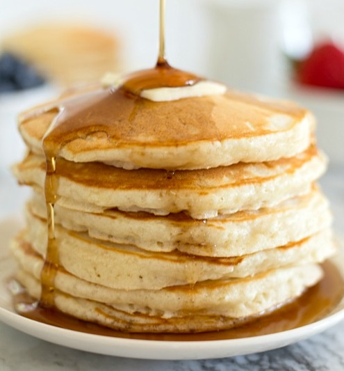

1/2

2/3
2/3
Aunt C's Delicious Pancakes
Saturday mornings were always pancake days growing up. This recipe for fluffy pancakes has served my family for many years, and I know you’ll love it too!
-Calanthe M.
Ingredients for 8x12-cm Wide Pancakes
- 3 ½ teaspoons baking powder
- 1 tablespoon white sugar
- ¼ teaspoon salt, or more to taste
- 1 ¼ cups milk
- 3 tablespoons butter, melted
- 1 egg
- 1 ½ cups all-purpose flour
Directions
- Sift flour, baking powder, sugar, and salt together in a large bowl. Make a well in the center and add milk, melted butter, and egg; mix until smooth.
- Heat a lightly oiled griddle or pan over medium-high heat. Pour or scoop the batter onto the griddle, using approximately 1/4 cup for each pancake; cook until bubbles form and the edges are dry, about 2 to 3 minutes. Flip and cook until browned on the other side. Repeat with remaining batter.
When to Flip Pancakes
Your pancake will tell you when it's ready to flip. Wait until bubbles start to form on the top and the edges look dry and set. This will usually take about two to three minutes on each side.
How to Reheat Pancakes
Store leftover pancakes in an airtight container in the fridge for about a week. Refrain from adding toppings (such as syrup) until right before you serve them so the pancakes don't get soggy.
Can You Freeze Pancakes
Yes, you can freeze pancakes and pancake batter.
- Freeze cooked pancakes: Allow the pancakes to cool completely, then arrange them in a single layer on a baking sheet (make sure the edges aren't touching). Flash freeze for a few hours or up to overnight. Reheat in an oven set to 350 degrees F until warmed through.
- To freeze pancake batter: Ladle the pancake batter in serving size portions into freezer bags, then wrap the bags in foil. Freeze flat for up to one month. Thaw in the refrigerator overnight.